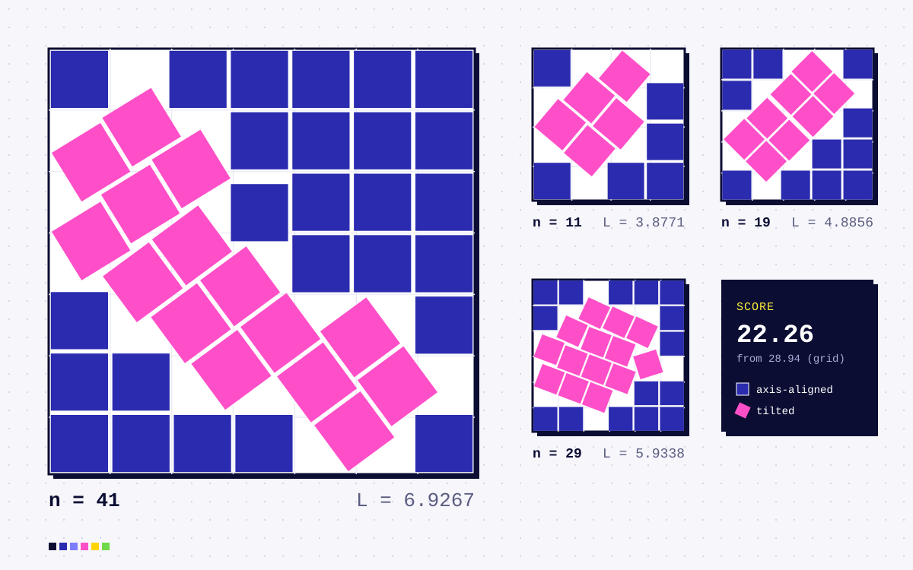

Home / Workshop / Squared-Squares
Optimization
NEWSquared-Squares
Kaggle’s Squares in Squares competition: for every n from 1 to 1000, fit n unit squares into the smallest possible square. Scoring tools, a certified per-n merge pipeline and my own packing searches.

Squares in Squares is a Kaggle packing competition built on a classic open problem. For every n from 1 to 1000, place n unit squares, at any position and rotation with no overlaps, inside the smallest axis-aligned square you can. The score sums Ln/√n − 1 over every n, so a perfect packing scores zero and every single configuration counts. For most n the best packing is unknown, and the best known ones tend to use oddly tilted squares.
This repo is my toolkit and submission history. It reimplements the official metric, including the interval-arithmetic check that certifies tilted squares really are disjoint. It parses a public records page of packing diagrams into coordinates, and merges candidate files from public notebooks and my own searches one n at a time, keeping a change only when it is certified valid and strictly better. My own contributions include a fault-line dynamic program and an LP “snap” that tightens near-feasible layouts.
The submission started at the 28.94 score of a plain grid and now sits at about 22.26.
Highlights
- A local scorer that reproduces the official metric, with float64 screening and certified recheck of close pairs at 60 digits
- A parser that turns the records page’s compact SVG diagrams into unit-square coordinates
- Per-n certified merges, so the best submission never regresses
- Fault-line DP and LP-snap searches for tilted packings
- Access
- private
- Year
- 2026
- Built with
- Python, NumPy, mpmath, Kaggle